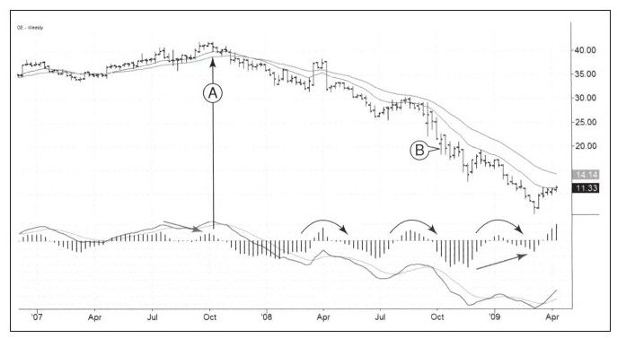

沃伦·巴菲特是广为人知的投资天才，小时候他买过邮政公司的股票，还卖过二手高尔夫球。他通过炒股成为世界上最富有的人之一。爱丽丝·施罗德的《滚雪球》一书详细地介绍了巴菲特是如何从充满烦恼的小天才成长为今天拥有巨大成就的投资人的。
我十分尊敬巴菲特先生，但尊敬不代表盲目崇拜。巴菲特在长期投资方面取得了巨大成功，但他也犯过错误，他不是所有的股票都赚到了钱。人们在错误中学到的总会比在成功中学到的要多。
2008年年底美国股市几近崩盘，贝尔斯登已经被廉价出售，基本上消灭了所有投资它的人，雷曼兄弟也跳湖了，市场中弥漫着疑惑与恐惧，好像没有安全的公司。人们不知道下一个要倒塌的“大象”是谁，看看房地美的走势图你就知道了。
在这次惶恐的下跌行情中，迎来了一则令人振奋的声明：巴菲特先生投资30亿美元购入通用电气（GE）股票。为了吸引他投资，通用电气公司付给他每年10%的利息，几乎是当时GE公司债券利率的两倍。除此之外，巴菲特还因此获得了行权价为22.25美元、规模为30亿美元的认股权证。听到这则声明后，我立即查看了该股的走势（如图9-5所示）。

声明发出的时间是图中的B点，GE股价在下跌趋势中已经运行了近一年，在图中标注A点的时候，市场给出绝佳的卖出信号，这个信号就是向上假突破伴随着顶背离。两个月后两条周移动平均线发生死叉宣告GE步入熊市。GE股价在下跌途中屡次被反弹打断，造成MACD的反转信号，由图中弯箭头所示。
在巴菲特先生发布购买该股公告的那天，映入我脑海的第一特征是周线组合系统还是红色。我在所有的交易中都使用这个系统，任何市场在任何时间框架下都可以由这两个特征来定义。一个是钝化，快速移动平均线运行速度减缓；另一个是力量，由MACD柱定义。如果当前MACD柱上涨到与前一个MACD柱高点相当的时候，牛市获得了力量；而当这种情况相反时，空头占主导地位。当钝化和力量同时指向上涨时，我的软件的K线颜色会变为绿色，它会告诉我只能做多或空仓等待，买入不违反规则。组合系统不会告诉我该做什么，但它会告诉我不该做什么。它就像一名检察官，给交易有用的控制规则，而这在金融市场中的大部分人都是缺乏的。
巴菲特买入GE股票的那一周组合系统是红色的。如果有伟人向我寻求意见，我会建议他继续等待。3周后，GE股票周线图由红转蓝，出现强烈底背离的信号，这种底部通常需要重新检验。价格可能短暂反弹，但之后还可能继续下跌到原来或更低的水平。如果在二次探底过程中MACD柱跌得很浅，此时就产生了底背离，这是技术分析中最强烈的看涨信号。这确实在2009年3月份发生了，此时我也开始买入股票。感谢巴菲特，他第一次让我注意到这只股票，在巴菲特先生发布买入公告之前我从没有注意过这只股票。
以上评论不是在批评巴菲特，投资GE时，他可能有公司或政策原因，另外，GE公司给他优厚交易条件，这在日后看起来可能非常值得买入；另外，从巴菲特先生买入GE股票到本章写作已经一年有余，GE股价在他的买入价之下运行良好。
这则讨论表明，即便有极好的基本面投资原因，看看走势图并使用一些基本的技术分析原则也是非常有益的，基本面信息和现代技术分析的共同发生是最好的情况。